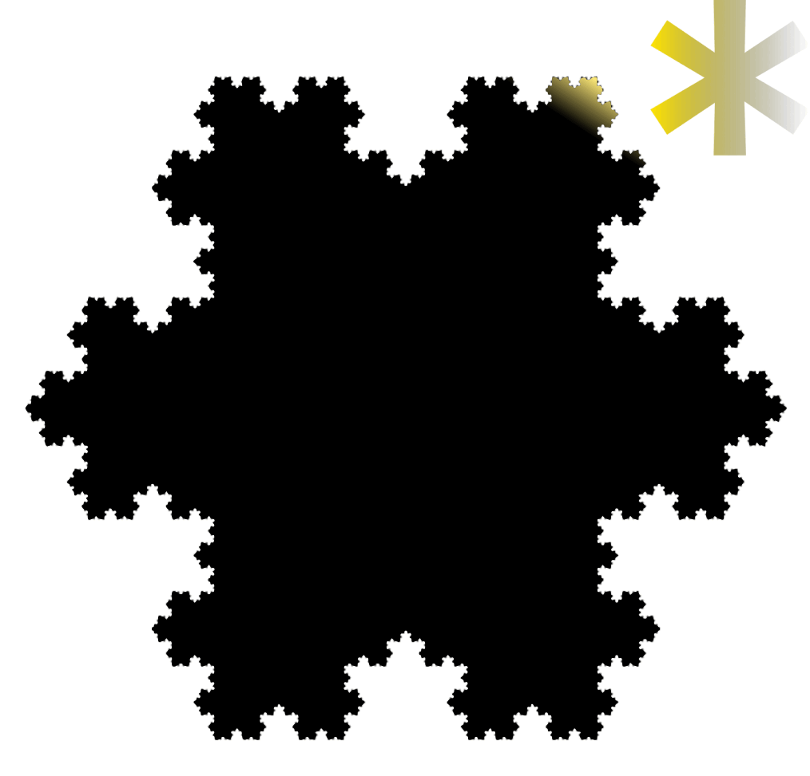
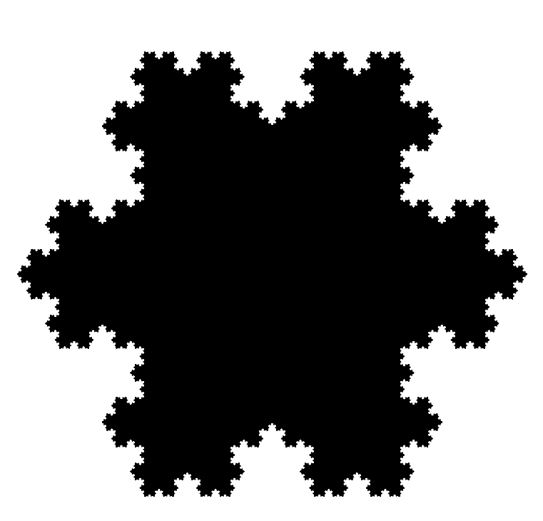
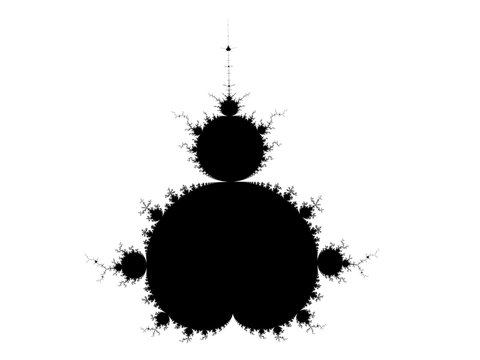
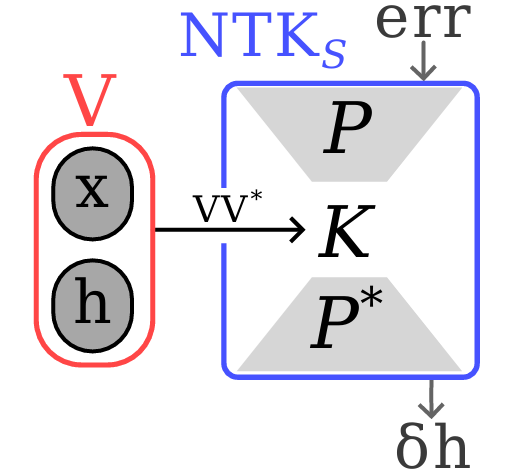

|
 |
James Hazelden |
 |
|
 |
Research and Personal Blog Email: jhazelde at uw dot edu, |
About Me
I'm a Ph.D. Candidate at the University of Washington Applied Mathematics department in my final year, advised by Dr. Eric-Shea Brown and Dr. Eli Shlizerman. Also, I'm a visiting scientist at the Allen Institute for Neural Dynamics, working closely with Dr. Laura Driscoll.
My long-term goal is to contribute to the emerging theory of learning in deep neural networks (specifically, those that are very stateful such as RNNs). More specifically, my current focus is on empirical operators, including describing bias during learning, formalizing notions of structure such as dynamical re-use, and making such operators tractable with randomized numerical approaches. Two primary goals are: (1) keeping the theory as empirical and assumption-free as possible, and (2) Making the tools practically fast to work with.
Outside of research, I compete in strongman and powerlifting (1,495 SBD). Back when I had time I played a lot with 3D graphics and CUDA (ex1, ex2, ex3). Feel free to reach out, always happy to chat!
Selected Works |
|
|
 GeNTK: Theory and Tractable Structure of Empirical State-Space Learning OperatorsIt's clear that empirical operators associated with learning are likely highly structured. Here, we formalize some of that structure, decomposing the state-space NTK operator and showing certain pieces can be explicitly computed at inference time for a wide range of weight-based models, biasing learning. We formalize notions of bias and low-rank learning in terms of the tensor decomposition of the GeNTK. |
CMRL: Predictable Learning Dynamics of GD Near State-Space BifurcationsBifurcations are sudden events in which the state-space dynamics (e.g., RNN trajectories) of a model undergo a massive, qualitative change. Here, we study the GeNTK at such bifurcations, showing that it becomes low-rank and analytically tractable. This means that learning at bifurcations can be studied very precisely with few assumptions, even in finite-width models. 
|
Blog Posts
Research:
Bifurcations Under GD
Bifurcations During GD: Fractal Tunnel Vision! (paper),
Operators Governing Dynamics of GD Learning in Recurrent Models
Introduction to NTK for Recurrent Models (paper),
Efficient NTK Alignment Using Trace Estimation (paper).
Older: Backpropagation for Training Biophysical Neural Networks (BNNs) (paper)
Loss Landscapes Emerging from BNNs,
Training Neuronal Circuits with Finite Difference, Interfacing BNNs and Spiking Data,
Personal Projects:
Soft Body Physics in CUDA and OpenGL, Tensor Calculus and the Tensor Chain Rule,
Hazey: Designing a GUI Builder in OpenGL, Space Log,
Voronoi Diagrams in 2- and 3-D.
Random:
Random Art, Lifting Visualizer, Coffee Brightness as a Function of Time Autograd Visualizer (Pip)